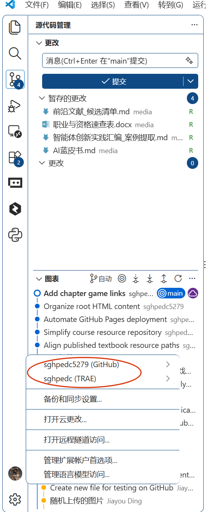
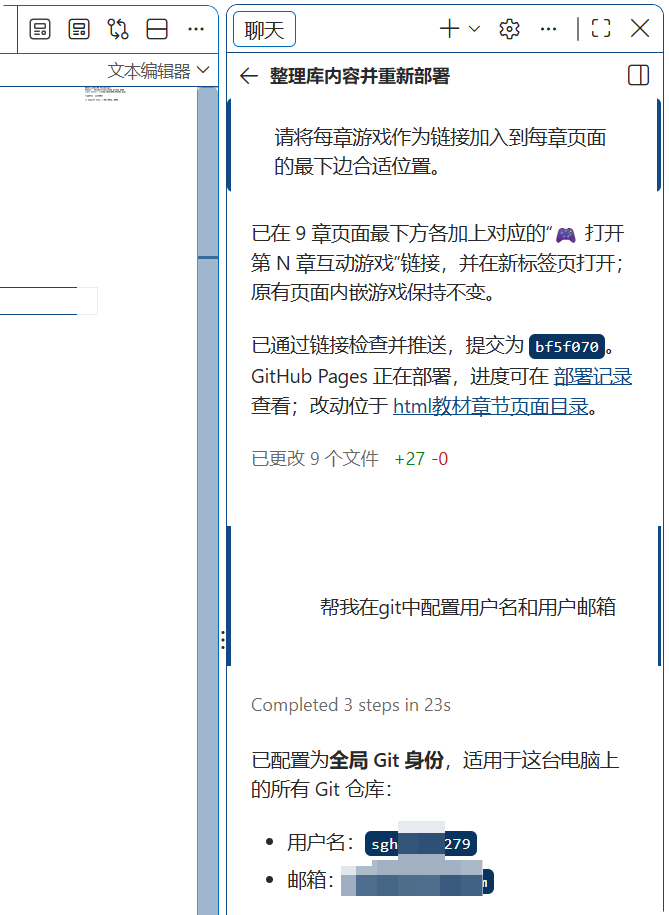
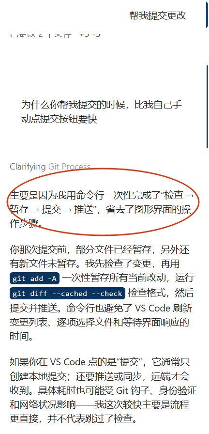
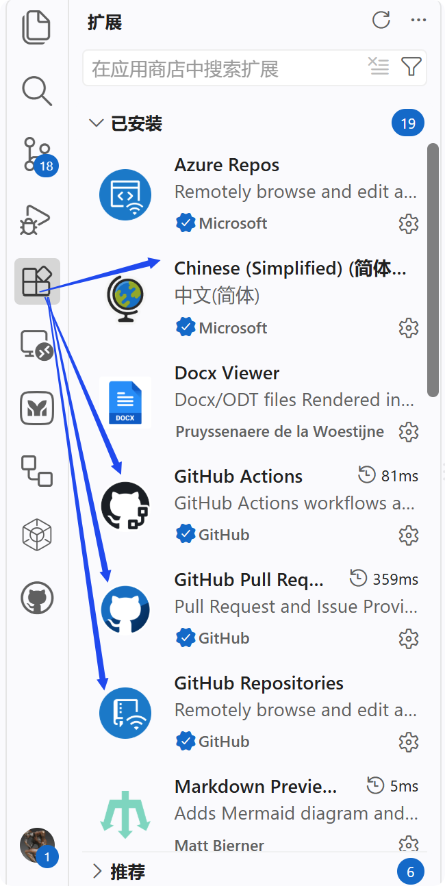
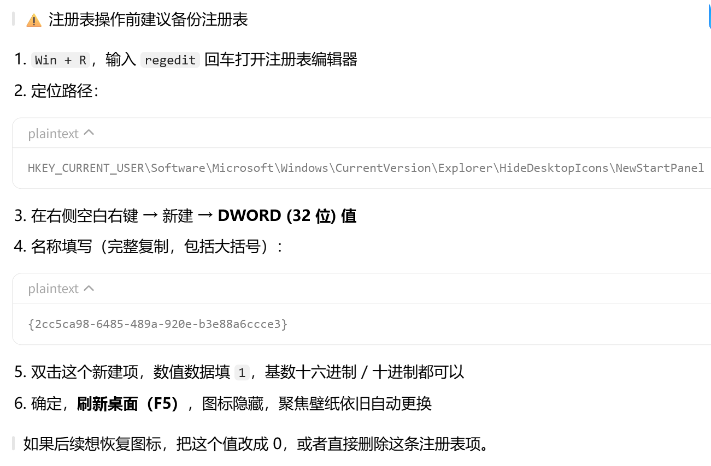

Contents
A先把github整明白
别急着学编程或者 AI！先把 GitHub 玩明白！
📌 想找 AI 提示词？搜 awesome chatgpt prompts
📌 想找效率工具？搜 awesome productivity
📌 想找设计资源？搜 awesome design SKILL 2 按Star排序 搜完之后，点页面上的 Stars 排序。Star越多的项目，越多人用，越靠谱，踩坑概率越低。
搜：awesome Agent –cn
或者：awesome Agent 中文
出来的结果大概率是中文内容，比硬啃英文舒服多了。
SKILL 2 README（中间一大段） 这是项目的"说明书"。里面有介绍、截图、使用方法。一般往下翻就能看到截图，看截图你就知道这个项目长什么样了。
SKILL 3 Star（右上角星星） 点一下星星，这个项目就收藏到你账号里了。以后在你的头像 → Your stars 里就能找到。
SKILL 4 Issues（顶部标签） 这里是用户提问题、反馈bug的地方。你遇到问题了，先去Issues里搜一下，大概率别人已经问过了，答案就在里面。
其实不是你的问题，是GitHub的服务器在国外，国内访问本来就慢。
🚀 办法 1: 用 Watt Toolkit 百度搜 Watt Toolkit 下载安装，打开会看到一排开关，把 GitHub 勾上，一键加速就行。 🚀 办法 2: 用镜像站（备选） 镜像站就是 GitHub 在国内的 "替身"，镜像站经常变动，这里就不写具体地址了，你在浏览器搜「github 镜像站」 会出来很多，挑一个最新的用就行，把链接里的 github.com 换成镜像地址即可。
✦ 小提示 镜像站只是用来"看"和"下载"的，别用来登录账号，安全第一。
看完上面的教程，你是不是已经手痒想搜点东西了？给你推荐几个亲测好用的内容:
awesome-chatgpt-prompts-cn 中文版提示词大全，几百个现成Prompt，比公众号上那些"100个神级Prompt"靠谱十倍。
Reactive-Resume 免费开源的简历制作工具，在线版直接用，不用下载，模板好看还能导出PDF。
HelloGitHub 中文社区，每月发布一期"GitHub好物推荐"，像翻杂志一样发现有趣项目，每期都不一样。
Stirling-PDF 免费开源的PDF处理神器，合并、拆分、压缩、转格式都能用。
yt-dlp 免费下载YouTube、B站等网站视频，无广告。
关于公有与私有的区别
github+VScode
先下载安装完成 VScode，git 然后打开 VScode，登录自己的 github 账号

找到并打开聊天窗口
让 Copilot 帮我们配置用户名和邮箱

多说一句，AI辅助真香……

vscode 常用设置
- 自动保存：在编辑文件时，自动保存文件。
- 代码格式化：在保存文件时，自动格式化代码。
- 代码注释：在代码中添加注释，方便后续维护。
- 安装扩展：在 VScode 中安装扩展，如 Python、Git 等，以增强功能。

Github基础
一、GitHub 运营主体与持久化运营模式
GitHub 日常运营主体为 GitHub, Inc.，2018 年被微软收购，作为微软旗下独立子品牌运营，由 GitHub 原有团队负责平台运维、产品迭代、社区管理；底层基础设施依托微软 Azure 云。GitHub 属于商业 SaaS 平台，并非公益项目。
盈利来源（支撑平台长期运行）
- 企业 / 团队订阅：GitHub Team、GitHub Enterprise（企业云端 / 本地私有化部署），是稳定基础现金流；
- GitHub Copilot：AI 代码助手订阅，近年增长最快的收入板块；
- 按量计费增值服务：GitHub Actions、Codespaces、Packages 超额资源计费、高级代码安全扫描；
- 其他：GitHub Marketplace 应用佣金、GitHub Sponsors 赞助分成等。
免费公开仓库、GitHub Pages 采用免费增值 Freemium策略：吸引开发者、师生搭建生态，免费用户的服务器与存储成本，由企业大客户与付费功能收入补贴。免费并非无限制，存储、带宽、CI 运行时长存在配额。
二、个人免费账号：私有仓库规则
✅ 私有仓库数量：无上限，可以创建无限多个私有仓库（2019 年取消私有仓库个数限制） ✅ 私有仓库协作者人数无上限
⚠️ 核心限制（个人免费版 GitHub Free）
- 存储：全部仓库（公有 + 私有）Git 仓库合计上限 10GB；Packages 包存储免费额度 500MB；GitHub Actions 每月 2000 分钟免费时长；
- 功能限制：私有仓库不能直接启用 GitHub Pages；缺少高级分支保护、高级安全扫描、优先技术支持等 Pro 专属功能；
瓶颈不是仓库数量，而是文件总容量，大量高清图片、扫描件、PDF 会快速耗尽存储空间。
GitHub Pro（个人付费版，约 7 美元 / 月）
私有仓库数量同样不限；解锁私有仓库 GitHub Pages、高级安全、分支保护等全部个人高级功能。
三、教学场景实操提示
- 免费个人账号可新建大量私有教材仓库，但私有库无法直接部署网页；
- 想要网页展示，二选一：
- 方案 A：仓库设置为公开仓库，直接启用 GitHub Pages；
- 方案 B：升级 GitHub Pro，私有仓库开启 Pages；
- 存放碑帖大图、档案扫描件时，留意总存储容量，避免超出 10GB 限额。
四、极简小结
GitHub 由微软旗下 GitHub 团队运营，依靠企业订阅、Copilot、云资源增值服务维持平台运转。
个人免费账号私有仓库数量不限，约束来自总存储容量与功能权限；免费私有库不能直接开启 GitHub Pages。
建模工具
信息系统分析与设计 ISAD｜建模工具与文档模板（中英文对照）
文档说明
- 适用场景：iSchool研究生课程、数字人文/档案系统、政务信息系统需求分析与建模
- 建模体系：结构化DFD → 面向对象UML → 业务流程BPMN → 事件驱动EDM → 需求规格SRS
- 标准来源：OMG、IEEE 830、ISO/IEC 29148、Dennis & Wixom《Systems Analysis and Design》
一、结构化建模：DFD 数据流图 Data Flow Diagram
1. 术语对照表
| 中文名称 | English Name | 缩写 | 说明 |
|---|---|---|---|
| 数据流图 | Data Flow Diagram | DFD | 结构化分析核心模型，描述数据在系统内流转 |
| 外部实体 | External Entity | EE | 系统外部参与者（用户、外部系统） |
| 处理过程 | Process | P | 数据加工操作 |
| 数据流 | Data Flow | DF | 数据传递路径 |
| 数据存储 | Data Store | DS | 数据库、文件、档案库 |
| 顶层图（0层图） | Context Diagram / Level 0 DFD | - | 系统边界与外部交互 |
| 分层数据流图 | Leveled DFD | - | 逐层分解，保证父图子图平衡 |
| 数据字典 | Data Dictionary | DD | 定义数据项、数据结构 |
| 加工逻辑说明 | Process Specification | PSPEC | 结构化语言、判定表、判定树 |
2. 支持DFD的建模软件（中英文）
| 工具中文名 | Tool English Name | 开源/商用 | 核心能力 |
|---|---|---|---|
| 微软Visio | Microsoft Visio | 商用 | DFD、ER图、流程图，Office生态首选 |
| 亿图图示 | EdrawMax | 商用+免费版 | 内置DFD模板，一键导出矢量图 |
| Visual Paradigm | Visual Paradigm | 商用+社区版 | 完整支持分层DFD、数据字典 |
| Modelio | Modelio | 开源免费 | DFD+UML+BPMN一体化建模 |
| Software Ideas Modeler | Software Ideas Modeler | 免费版+付费 | 轻量CASE工具，支持DFD与ERD |
二、面向对象建模：UML 统一建模语言 Unified Modeling Language
1. UML图类中英文对照（ISAD课程必选）
| 中文图名 | English Diagram Name | 用途（系统分析阶段） |
|---|---|---|
| 用例图 | Use Case Diagram | 需求捕获、业务参与者与功能范围 |
| 类图 | Class Diagram | 业务实体、档案对象、实体关系 |
| 序列图 | Sequence Diagram | 业务交互时序、消息传递 |
| 活动图 | Activity Diagram | 业务流程、分支逻辑 |
| 状态图 | State Machine Diagram | 文档/档案生命周期状态流转 |
| 组件图 | Component Diagram | 系统模块、接口集成 |
2. UML建模工具清单
| 中文名称 | English Name | 开源属性 | 适配ISAD教学 |
|---|---|---|---|
| Enterprise Architect | Sparx EA | 商用 | 高校iSchool首选，支持UML+BPMN+DFD全模型 |
| Visual Paradigm | Visual Paradigm | 社区免费 | 教学作业、用例与类图建模 |
| Modelio | Modelio | 完全开源 | 无版权限制，适合课程教学 |
| Draw.io (Diagrams.net) | Draw.io | 开源免费 | 在线协作，UML+DFD+BPMN全图形 |
| StarUML | StarUML | 免费版 | 轻量桌面UML工具 |
三、业务流程建模：BPMN 业务流程模型与符号 Business Process Model and Notation 2.0
1. 核心术语对照
| 中文术语 | English Term | 缩写 | |
|---|---|---|---|
| 业务流程模型与符号 | Business Process Model and Notation | BPMN 2.0 | |
| 泳道 | Swimlane | - | 角色/部门权责划分 |
| 任务 | Task | - | 原子业务操作 |
| 开始事件 | Start Event | - | 流程触发点 |
| 结束事件 | End Event | - | 流程终止点 |
| 网关 | Gateway | - | 分支、合并、排他逻辑 |
| 子流程 | Sub-Process | - | 封装复杂业务环节 |
| 案例管理模型 | Case Management Model and Notation | CMMN | 非结构化业务（档案办理、政务审批） |
| 决策模型 | Decision Model and Notation | DMN | 业务规则、审批条件 |
2. BPMN流程建模工具
| 中文名称 | English Name | 适用场景 |
|---|---|---|
| Bizagi Modeler | Bizagi Modeler | 免费教学版，绘制审批流程 |
| Camunda Modeler | Camunda Modeler | 开源，流程可直接部署执行 |
| SAP Signavio | SAP Signavio | 企业级流程治理、流程挖掘 |
| IBM Blueworks Live | IBM Blueworks Live | 团队在线协同建模 |
| Draw.io | Diagrams.net | 免费在线BPMN绘图 |
四、事件驱动建模 EDM Event-Driven Modeling（档案/政务系统重点）
1. 术语中英文对照
| 中文名称 | English Name | 缩写 | |
|---|---|---|---|
| 事件驱动建模 | Event-Driven Modeling | EDM | |
| 领域事件 | Domain Event | - | 档案新增、归档、借阅、销毁等业务事件 |
| 事件风暴 | Event Storming | - | 多人协作梳理业务事件 |
| 事件流程图 | Event Flow Diagram | EFD | |
| 状态事件图 | State Event Diagram | SED | |
| 消息队列 | Message Queue | MQ | |
| CQRS | Command Query Responsibility Segregation | CQRS | 命令与查询分离（数字档案系统常用） |
2. 事件驱动建模工具
- Draw.io / Diagrams.net：绘制事件流、状态图
- Visual Paradigm：事件风暴+领域模型一体化
- Lucidchart：在线协作事件风暴白板
- Modelio：领域事件+UML类图联动建模
五、ERD 实体关系图 Entity Relationship Diagram（数据建模）
| 中文名称 | English Name | 缩写 | |
|---|---|---|---|
| 实体关系图 | Entity Relationship Diagram | ERD | |
| 实体 | Entity | E | 业务对象（案卷、人员、机构） |
| 属性 | Attribute | A | 字段元数据 |
| 主键 | Primary Key | PK | |
| 外键 | Foreign Key | FK | |
| 一对一 | One-to-One | 1:1 | |
| 一对多 | One-to-Many | 1:N | |
| 多对多 | Many-to-Many | M:N |
工具：Visio、Draw.io、PowerDesigner、Navicat Data Modeler
六、需求规格文档模板（中英文标准文件名，IEEE 830 / ISO 29148）
1. 文档名称中英文对照（ISAD项目全套文档）
| 中文文档名 | English Document Name | 标准缩写 | 适用阶段 |
|---|---|---|---|
| 业务需求说明书 | Business Requirements Specification | BRS | 立项阶段 |
| 干系人需求说明书 | Stakeholder Requirements Specification | StRS | 需求调研 |
| 系统需求说明书 | System Requirements Specification | SyRS | 信息系统项目 |
| 软件需求规格说明书 | Software Requirements Specification | SRS | 软件开发（IEEE 830标准） |
| 运营概念文档 | Concept of Operations | ConOps | 政务/档案系统 |
| 需求跟踪矩阵 | Requirements Traceability Matrix | RTM | 全程需求管控 |
| 系统概要设计说明书 | System Design Specification | SDS | 概要设计 |
| 详细设计说明书 | Detailed Design Specification | DDS | 详细建模 |
2. SRS（软件需求规格说明书）标准目录（中英文大纲）
- 引言 Introduction
1.1 项目背景 Project Background 1.2 文档目的 Purpose of Document 1.3 文档范围 Scope 1.4 读者对象 Intended Audience 1.5 参考文献 References 1.6 术语与缩略语 Glossary & Acronyms
- 总体描述 Overall Description
2.1 产品愿景 Product Vision 2.2 系统环境 System Environment 2.3 用户角色 User Roles 2.4 业务约束 Business Constraints
- 功能需求 Functional Requirements (FR)
- 非功能需求 Non-Functional Requirements (NFR)
4.1 性能 Performance 4.2 安全性 Security 4.3 可用性 Usability 4.4 可靠性 Reliability 4.5 可维护性 Maintainability 4.6 兼容性 Compatibility
- 外部接口需求 External Interface Requirements
5.1 用户界面 UI 5.2 软硬件接口 Hardware & Software Interface 5.3 数据接口 Data Interface
- 数据需求 Data Requirements
6.1 数据字典 Data Dictionary 6.2 ERD 实体关系模型
- 附录 Appendices
附录 A：DFD 数据流图 附录 B：UML 用例图、类图 附录 C：BPMN 业务流程图 附录 D：需求跟踪矩阵 RTM
七、全栈建模工具汇总（一站式CASE工具，推荐教学使用）
（一）开源免费（课程作业首选，无版权）
- Draw.io (Diagrams.net)：DFD+UML+BPMN+ERD+事件图，在线协作
- Modelio：UML+BPMN+DFD一体化CASE工具
- StarUML：轻量UML建模
- Camunda Modeler：BPMN流程建模
（二）商用专业（科研项目、毕业设计）
- Sparx Enterprise Architect（EA）：iSchool全球主流CASE工具，全模型联动
- Visual Paradigm：需求+建模+文档自动生成
- Microsoft Visio：办公环境快速绘图
- PowerDesigner：数据建模+ERD+数据库生成
八、ISAD建模配套标准文献（中英文文件名）
- Systems Analysis and Design (Dennis, Wixom) — 教材
- IEEE 830-1998: IEEE Recommended Practice for Software Requirements Specifications
- ISO/IEC/IEEE 29148:2018 需求工程国际标准
- OMG UML 2.5 Specification
- OMG BPMN 2.0 Specification
- OMG DMN & CMMN 业务规则与案例建模规范
操作系统激活
正常情况下大家购买的笔记本电脑已经激活了Windows操作系统
但是如果你是组装机，你可能需要
自己激活Windows操作系统。
suda人的福利,不用像我们当年一样冒险找各种野路子： https://its.suda.edu.cn/1603/list.htm
学校提供了我们免费的Windows操作系统激活密钥
你可以在学校网站上找到。
作为我们大学四年甚至更长时间的伙伴，最好花点时间盘一下操作系统的安装与激活。校园网联合镜像站
告别“换源选择困难症”：不要再在清华源 (TUNA)、中科大源 (USTC)、上交大源 (SJTU)、南大源 (NJU) 和阿里源之间反复横跳、互相踩雷了。 由教育部和中国教育和科研计算机网（CERNET）网络中心正式支持的校园网联合镜像站（mirrors.cernet.edu.cn ( https://mirrors.cernet.edu.cn/ )），就是开源镜像界的“终极大一统”入口。
电脑桌面
电脑桌面保持清洁（图标少、无杂乱文件）的好处
分效率、系统、心理、安全四个维度
一、操作效率提升
- 快速定位文件：图标越少，找目标文件/软件的视觉搜索成本越低，不用在一堆图标里逐个辨认，减少鼠标移动、查找时间。
- 减少误操作：避免误点、误拖动、误删除文件；同时桌面清爽，方便你临时整理素材、截图。
- 快捷访问逻辑清晰：桌面只放高频使用入口，低频文件统一归档到文件夹，养成分类存放习惯。
二、系统层面
很多人忽略这一点：桌面本质上也是系统文件夹
- 降低资源管理器负载：桌面每一个图标、缩略图（图片、视频、PDF），开机时资源管理器都要加载预览、渲染图标。桌面文件巨多、大量图片文件堆积，极易造成：开机桌面加载卡顿、选中/拖动文件失灵、资源管理器卡死、自动重启，正好对应你之前遇到的故障。
- 开机速度小幅优化：开机阶段系统会遍历桌面目录渲染图标，桌面文件越多，桌面加载完成越慢。
- 减少缩略图缓存异常：大量图片放在桌面，缩略图缓存容易损坏，出现图标空白、预览加载失败。
- 降低C盘占用风险：桌面默认路径在C盘（
C:\Users\你的用户名\Desktop），文件堆桌面很容易悄悄占满系统盘，导致系统卡顿、更新失败。
三、心理与专注度
- 减少视觉干扰：杂乱桌面相当于持续的视觉噪音，打开电脑第一眼大量信息冲击，更容易分心；干净桌面有助于进入专注工作、学习状态。
- 降低心理负担：满桌面未处理文件，潜意识里会持续提醒你“待办很多”，带来隐性焦虑；清爽桌面有“清空待办”的心理暗示。
四、信息安全与文件管理
- 防止隐私泄露：远程协助、投屏、截图分享时，桌面不会无意间暴露敏感文档、证件截图、项目资料。
- 降低文件丢失风险：桌面属于临时存放区，不适合长期存档。很多人系统重装、账户出问题时，才发现重要文件都放在桌面，忘记备份；固定归档到其他盘，文件更安全。
- 便于定期整理复盘：桌面作为“临时工作台”，养成定期清理归档的习惯，倒逼自己梳理文件，避免资料越积越乱。
配套小建议
- 桌面原则：只放高频快捷方式，不放原始文件；临时文件设置7天清理周期，完成后移动到D盘归档目录；
- 如果你喜欢Windows聚焦壁纸：保留壁纸自动轮换，用注册表方法

可隐藏「了解有关此图片的信息」图标，兼顾好看+干净；- 不要把大量图片直接堆桌面，这也是加重资源管理器异常的诱因之一。